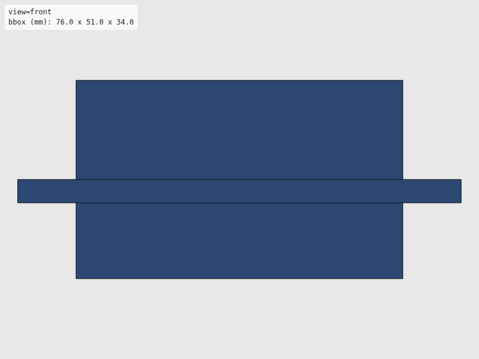
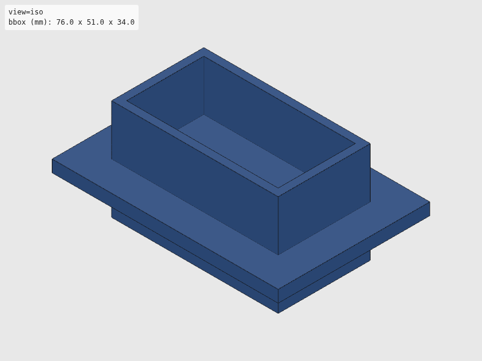
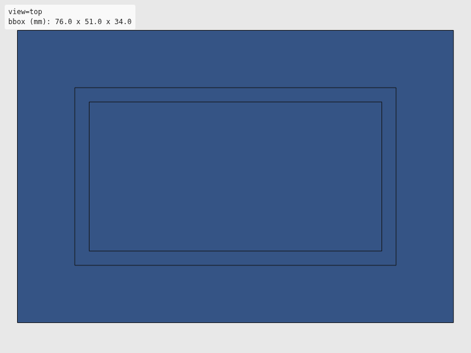
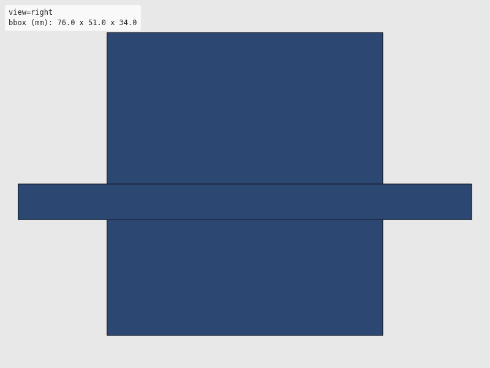

Verdict: review
Green is necessary, not sufficient: these checks cannot see local defects. Look at the render and decide.




The intent as written, for comparison with the renders. Not checked.
"""Rest cradles for AELAB dPette 7016 (single) and DLAB dPette+ (8-channel).
Holds pipette upright at known position. Steel inserts mate with dock magnets.
Usage:
uv run --group cad python hardware/cad/dpette/dpette_cradle.py
"""
# Shared export helper (standalone mode)
import sys
from pathlib import Path
from build123d import Box, Cylinder, Pos
sys.path.append(str(Path(__file__).resolve().parent.parent))
from util.export import export_part
sys.path.pop()
# --- Common parameters (all in mm) ---
WALL = 2.5
BASE_THICKNESS = 4.0
CRADLE_HEIGHT = 30.0
CLEARANCE = 0.5
# dPette 7016 single-channel barrel
SINGLE_BARREL_D = 20.0
SINGLE_OUTER_D = SINGLE_BARREL_D + CLEARANCE * 2 + WALL * 2
# dPette+ 8-channel body (wider, must keep tips level)
MULTI_BODY_W = 50.0
MULTI_BODY_D = 25.0
def build_dpette_single_cradle():
"""Build rest cradle for dPette 7016 single-channel."""
# Cylindrical cradle with open top
outer = Cylinder(SINGLE_OUTER_D / 2, CRADLE_HEIGHT)
inner = Pos(0, 0, BASE_THICKNESS) * Cylinder(
(SINGLE_BARREL_D + CLEARANCE * 2) / 2, CRADLE_HEIGHT
)
cradle = outer - inner
# Flat base for stability
base = Box(SINGLE_OUTER_D + 10, SINGLE_OUTER_D + 10, BASE_THICKNESS)
return base + Pos(0, 0, BASE_THICKNESS / 2) * cradle
def build_dpette_multi_cradle():
"""Build rest cradle for dPette+ 8-channel (must keep tips level)."""
inner_w = MULTI_BODY_W + CLEARANCE * 2
inner_d = MULTI_BODY_D + CLEARANCE * 2
outer_w = inner_w + WALL * 2
outer_d = inner_d + WALL * 2
# Rectangular cradle
outer = Box(outer_w, outer_d, CRADLE_HEIGHT + BASE_THICKNESS)
inner = Pos(0, 0, BASE_THICKNESS) * Box(inner_w, inner_d, CRADLE_HEIGHT + 1)
cradle = outer - inner
# Wide base for leveling (critical for 8-channel)
base = Box(outer_w + 20, outer_d + 20, BASE_THICKNESS)
return base + Pos(0, 0, BASE_THICKNESS / 2) * cradle
def export_single(part) -> None:
"""Export single-channel cradle to STL and SVG."""
export_part(part, "dpette", "dpette_single_cradle")
def export_multi(part) -> None:
"""Export multi-channel cradle to STL and SVG."""
export_part(part, "dpette", "dpette_multi_cradle")
if __name__ == "__main__":
export_single(build_dpette_single_cradle())
export_multi(build_dpette_multi_cradle())
| Check | Status | Detail |
|---|---|---|
| file_integrity | PASS | binary STL: header present, 72 triangles, file length matches 84 + 50*n |
| watertight | PASS | watertight=True, winding_consistent=True, euler_number=4 (reported only, not asserted — plan §7.2) |
| bbox | SKIP | no --envelope given |
| volume | SKIP | no --volume-band given |
| browser_load | PASS | viewer reported body[data-state]=rendered |
| render | PASS | 4 view(s) captured at 800x600 |